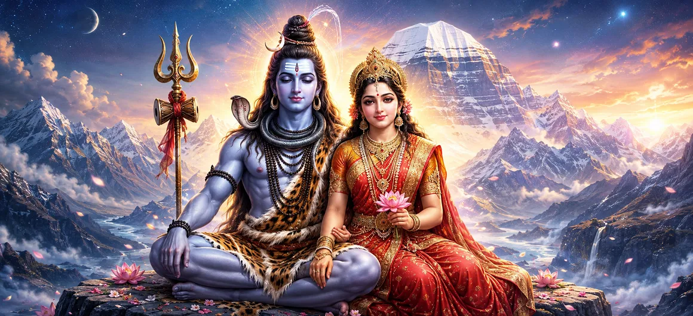

Lord Shiva and Goddess Shakti
ভগবান শিব ও দেবী শক্তি
भगवान शिव और देवी शक्ति
The relationship between Lord Shiva and Goddess Shakti is one of the deepest and most beautiful themes in Hindu spiritual tradition. Shiva is contemplated as the supreme consciousness, the silent witness and the unchanging reality, while Shakti is revered as the divine power through which that reality becomes active, expressive and compassionate.
उनका रिश्ता महज एक दिव्य जोड़े की कहानी नहीं है। यह अविभाज्यता के बारे में एक आध्यात्मिक शिक्षा है। शांति और गति, जागरूकता और ऊर्जा, ध्यान और क्रिया, अतिक्रमण और दयालु भागीदारी को शिव और शक्ति की पवित्र छवि के माध्यम से एक साथ समझा जा सकता है।
शिव-शक्ति के चार मूल तत्त्व
शिव चेतना के रूप में
शिव आध्यात्मिक वास्तविकता के मौन, स्थिर और साक्षी आयाम का प्रतिनिधित्व करते हैं। उनकी शांति भक्त को निरंतर बाहरी गतिविधि से परे देखने की याद दिलाती है।
शक्ति दैवीय शक्ति के रूप में
शक्ति दिव्य शक्ति, रचनात्मकता, सुरक्षा, करुणा और परिवर्तन को व्यक्त करती है। वह वह गतिशील उपस्थिति है जिसके माध्यम से पवित्र क्षमता क्रिया बन जाती है।
पूरकता में एकता
शिव और शक्ति का चिंतन एक साथ किया जाता है क्योंकि चेतना और शक्ति अंततः अलग-अलग नहीं हैं। उनका मिलन विभाजन नहीं सौहार्द सिखाता है।
दिव्य प्रेम
शिव और शक्ति के पवित्र रिश्ते को भक्ति, साहचर्य, त्याग, करुणा और दिव्य जीवन की साझा जिम्मेदारियों के माध्यम से भी याद किया जाता है।
परिवर्तन की शक्ति
शक्ति उग्र सुरक्षा के साथ-साथ कोमल मातृत्व की परंपराओं में प्रकट होती है। उनके कई रूप भक्त को याद दिलाते हैं कि दिव्य शक्ति अज्ञानता को नष्ट कर सकती है और जो पवित्र है उसकी रक्षा कर सकती है।
आध्यात्मिक संतुलन
शिव-शक्ति दृष्टि आंतरिक संतुलन को प्रोत्साहित करती है: कमजोरी के बिना मौन, घमंड के बिना ताकत, बेचैनी के बिना कार्रवाई, और स्वामित्व के बिना भक्ति।
शिव और शक्ति: एक पवित्र यात्रा
शिव और शक्ति का अर्थ
शिव शब्द शुभता का भाव रखता है और शैव परंपराओं में सर्वोच्च दिव्य वास्तविकता से जुड़ा है। शक्ति का अर्थ शक्ति या ऊर्जा है और इसे गतिशील दिव्य सिद्धांत के रूप में प्रतिष्ठित किया जाता है। इन विचारों को दो अलग-अलग प्राणियों के बीच एक साधारण विभाजन तक सीमित नहीं किया जाना चाहिए। कई परंपराओं में, शिव और शक्ति एक पवित्र वास्तविकता के दो अविभाज्य आयाम हैं।
यह रिश्ता भक्तों को एक गहन आध्यात्मिक भाषा प्रदान करता है। शिव जागरूकता, मौन और वैराग्य का मूल्य सिखाते हैं। शक्ति साहस, करुणा, रचनात्मकता और उद्देश्यपूर्ण कार्रवाई का मूल्य सिखाती है। साथ में वे एक दृष्टि प्रदान करते हैं जिसमें आध्यात्मिक प्राप्ति के लिए जीवन को अस्वीकार करने की आवश्यकता नहीं है, बल्कि यह सीखना है कि इसे ज्ञान के साथ कैसे जीना है।
देवी पार्वती और शिव के प्रति उनकी भक्ति
शिव और शक्ति की कहानियों में पार्वती का केंद्रीय स्थान है। उनकी भक्ति को अक्सर दृढ़ संकल्प, प्रेम और आध्यात्मिक शक्ति की अभिव्यक्ति के रूप में याद किया जाता है। शिव के लिए तपस्या करती पार्वती की छवि भक्तों को केंद्रित आकांक्षा और अटूट विश्वास का एक शक्तिशाली उदाहरण देती है।
महादेव की प्रिय सहचरी और व्यापक रूप से प्रिय परंपराओं में गणेश और कार्तिकेय की माँ के रूप में, पार्वती परिवार, मातृत्व और दयालु शक्ति के पवित्र आयाम का भी प्रतिनिधित्व करती हैं। उनकी उपस्थिति से पता चलता है कि दिव्य जीवन में गहन तपस्या और दुनिया में प्रेमपूर्ण भागीदारी दोनों शामिल हो सकते हैं।
अर्धनारीश्वर का रहस्य
अर्धनारीश्वर शिव-शक्ति एकता की सबसे शक्तिशाली दृश्य अभिव्यक्तियों में से एक है। दिव्य रूप शिव और देवी को एक शरीर में जोड़ता है। दो सिद्धांतों को दुश्मन या प्रतिस्पर्धी के रूप में प्रस्तुत करने के बजाय, छवि सिखाती है कि उनका रिश्ता गहन पूरकता और अविभाज्यता में से एक है।
एक भक्त के लिए, अर्धनारीश्वर संतुलन पर ध्यान बन सकता है। आंतरिक शक्ति को करुणा की आवश्यकता है। ज्ञान के लिए विनम्रता की आवश्यकता होती है। शांति के लिए उद्देश्यपूर्ण कार्रवाई की आवश्यकता होती है। पवित्र छवि मन को कठोर विरोधों से परे जाने और गहरी एकता को पहचानने के लिए आमंत्रित करती है।
पार्वती, दुर्गा और काली: शक्ति के अनेक रूप
देवी को कई रूपों, नामों और भक्ति परंपराओं के माध्यम से याद किया जाता है। पार्वती कोमलता, साहचर्य और मातृत्व को व्यक्त करती हैं। दुर्गा को एक शक्तिशाली रक्षक के रूप में पूजा जाता है जो विनाशकारी शक्तियों का सामना करती है। काली उग्र परिवर्तन और अंधकार, भय और अज्ञान के विनाश से जुड़ी है। ये रूप महज अलग-अलग व्यक्तित्व नहीं हैं. वे भक्तों को विभिन्न आध्यात्मिक आवश्यकताओं के अनुसार दैवीय शक्ति तक पहुंचने की अनुमति देते हैं।
शिव-शक्ति भक्ति में उग्र और सौम्य दोनों रूप पवित्र हो सकते हैं। संरक्षण और करुणा विपरीत नहीं हैं। एक माँ की कोमलता असाधारण साहस के साथ रह सकती है। यह शक्ति पूजा को पीड़ा और आशा दोनों का सामना करने के लिए एक समृद्ध आध्यात्मिक शब्दावली प्रदान करता है।
सृजन, संरक्षण और परिवर्तन
शिव और शक्ति मिलकर अस्तित्व की गति पर विचार करने का एक शक्तिशाली तरीका प्रदान करते हैं। शक्ति अभिव्यक्ति, गतिविधि और परिवर्तन से जुड़ी है, जबकि शिव उस पारलौकिक जागरूकता का प्रतिनिधित्व करते हैं जिसके भीतर सभी परिवर्तन देखे जाते हैं। इसलिए रिश्ते पर लौकिक और व्यक्तिगत दोनों स्तरों पर विचार किया जा सकता है।
रोजमर्रा की जिंदगी में, लोग लगातार शांति और कार्रवाई के बीच चलते रहते हैं। बोलने के क्षण और चुप रहने के क्षण, निर्माण के क्षण और जाने देने के क्षण होते हैं। शिव-शक्ति का प्रतीकवाद भक्त को याद दिलाता है कि बुद्धिमत्ता केवल एक पक्ष चुनने में नहीं है, बल्कि उनके बीच सही संबंध सीखने में है।
शिव-शक्ति ज्ञान को जीना
शिव और शक्ति की शिक्षा तब सार्थक हो जाती है जब वह दैनिक आचरण में उतरती है। एक भक्त प्रार्थना, मौन और आत्म-निरीक्षण के क्षण बनाकर शिव जैसी शांति का अभ्यास कर सकता है। वही भक्त दूसरों की सेवा करके, जो अच्छा है उसकी रक्षा करके, साहस के साथ कार्य करके और सामान्य जिम्मेदारियों में करुणा लाकर शक्ति का अभ्यास कर सकता है।
सबसे गहरा सबक यह है कि आध्यात्मिक जीवन को सामान्य जीवन से अलग न करें। जागरूकता को कार्रवाई का मार्गदर्शन करने दें। शक्ति करुणामय बनी रहे. भक्ति हृदय को विनम्र बनाए। मौन को ज्ञान बनने दो और ज्ञान को सेवा बनने दो। इस प्रकार शिव और शक्ति का स्मरण मात्र एक विचार न रहकर एक जीवंत अभ्यास बन जाता है।
शिव और शक्ति भक्त को क्या सिखाते हैं
कार्रवाई से पहले शांति
संसार पर प्रतिक्रिया करने से पहले रुकें, निरीक्षण करें और ईश्वर को याद करें। शांति कार्रवाई को स्पष्ट और अधिक दयालु बना सकती है।
करुणा के साथ साहस
शक्ति भक्त को याद दिलाती है कि वास्तविक शक्ति केवल शक्ति प्रदर्शित करने के बजाय रक्षा करती है, सेवा करती है और उत्थान करती है।
संतुलन
आध्यात्मिक परिपक्वता का अर्थ है यह सीखना कि कब कार्य करना है, कब इंतजार करना है, कब बोलना है और कब मौन रहना अधिक बुद्धिमानी है।
पवित्र रिश्ते
शिव और शक्ति का संबंध हमें याद दिलाता है कि प्रेम में सम्मान, स्वतंत्रता, साहचर्य, भक्ति और जिम्मेदारी हो सकती है।
अंधकार को रूपांतरित करना
शक्ति के उग्र रूप भक्त को भय, अज्ञान और विनाशकारी आदतों का साहस और आध्यात्मिक अनुशासन के साथ सामना करने के लिए प्रेरित करते हैं।
दैनिक जीवन में भक्ति
प्रार्थना, ईमानदार कार्य, दया, संयम और सेवा सभी शिव-शक्ति स्मरण की अभिव्यक्ति बन सकते हैं।
"जहां चेतना शांत है और करुणा सक्रिय है, शिव और शक्ति का ज्ञान हृदय के भीतर रहना शुरू कर देता है।"
अक्सर पूछे जाने वाले प्रश्न
भगवान शिव के संबंध में देवी शक्ति कौन हैं?
कई हिंदू परंपराओं में, शक्ति को दैवीय शक्ति और शिव से जुड़ी पवित्र वास्तविकता के गतिशील पहलू के रूप में समझा जाता है। शिव और शक्ति को अक्सर अविभाज्य माना जाता है।
अर्धनारीश्वर क्या है?
अर्धनारीश्वर शिव और शक्ति का समग्र दिव्य रूप है, जो एक ही पवित्र छवि के माध्यम से उनकी एकता और अविभाज्यता को व्यक्त करता है।
क्या पार्वती शक्ति का रूप हैं?
कई भक्ति परंपराओं में, पार्वती को देवी और शक्ति की अभिव्यक्ति के रूप में पूजा जाता है, और शिव के दिव्य साथी के रूप में पूजा जाता है।
शिव और शक्ति से भक्त क्या सीख सकते हैं?
भक्त जागरूकता, साहस, करुणा, संतुलन, भक्ति, आत्म-नियंत्रण, सेवा और आंतरिक शांति और उद्देश्यपूर्ण कार्रवाई के बीच पवित्र संबंध के बारे में सबक ले सकते हैं।